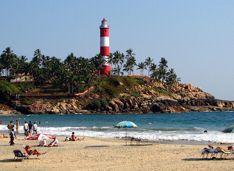

Kovalam Beach
Kovalam beach is actually a long stretch of white sandy beach running alongside the Malabar Coast. The three separated parts of the
beach are Hawah beach, Samudra beach and the Light House beach. The largest among these three beaches is the Light House
beach which is a must visit beach of Kovalam. A massive rocky promontory on the Kovalam beach has created a beautiful bay of calm
waters ideal for sea bathing.The leisure options at this beach are plenty and diverse.Sunbathing, swimming, herbal body toning
massages, special cultural programmes and catamaran cruising are some of them.

Contact:
Tourist Facilitation Centre,
Kovalam: +91 471 2480085
Best time to visit:
September to March
Getting there:
Nearest railway station: Thiruvananthapuram Central, about 16 km
Nearest airport: Trivandrum International Airport, about 10 km
Entry Fee:
Entry to the beach is free for the tourists and the locals but, the entry to lighthouse costs
INR 10 for adults,
INR 3 for children,
INR 20 for still cameras,
INR 25 for video cameras.